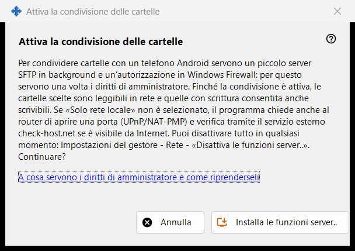
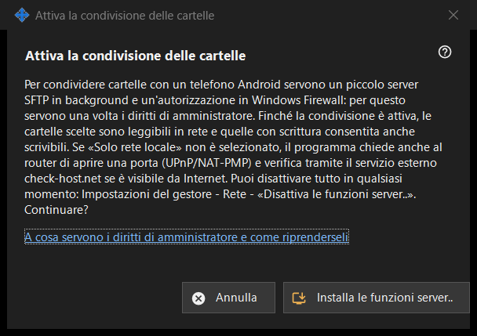

Attiva la condivisione delle cartelle
Scopo
Chiede il permesso di installare il lato server della condivisione: un piccolo server SFTP in background e un'eccezione di Windows Firewall. Si apre dal pulsante «Attiva le funzioni server..» della finestra principale e dalle procedure guidate, e richiede i diritti di amministratore una sola volta.


In questo ordine
- Leggi la spiegazione.
- Premi «Installa le funzioni server..».
- Conferma la richiesta di amministratore di Windows.
- Attendi la riga del risultato; in caso di successo la finestra segnala che la condivisione delle cartelle è attiva.
- Premi «Annulla» per uscire senza modifiche.
Gli elementi
Che cosa fa
Condividere cartelle con un telefono Android richiede un piccolo server SFTP in background e un permesso di Windows Firewall. Mentre la condivisione è attiva, le cartelle scelte possono essere lette tramite la rete e quelle aperte in scrittura possono anche essere scritte. Se non è spuntata l'opzione solo rete locale, il programma chiede anche al router di aprire una porta (UPnP/NAT-PMP) e controlla l'indirizzo tramite un servizio esterno.
Esiti
«Fatto. La condivisione delle cartelle è attiva.»; «Condivisione non attivata: i diritti di amministratore non sono stati concessi.» quando la richiesta viene rifiutata (non cambia nulla e puoi riprovare); oppure un errore del firewall, per cui la finestra chiede di riprovare e di inviare il log: Impostazioni del gestore - Aiuto - «Esporta registri per l'analisi».
Diritti di amministratore e come ritirarli
Il collegamento spiega a che cosa servono i diritti. Per annullare, usa «Disattiva le funzioni server..» nelle impostazioni del gestore: la condivisione si ferma, i telefoni connessi vengono disconnessi e il permesso del firewall viene rimosso. L'elenco delle cartelle e la password restano, e tutto si può riattivare.
Impostazioni del gestore · Impostazioni condivisione SFTP · Impostazioni server di scambio